<div class="masonry-layout">
  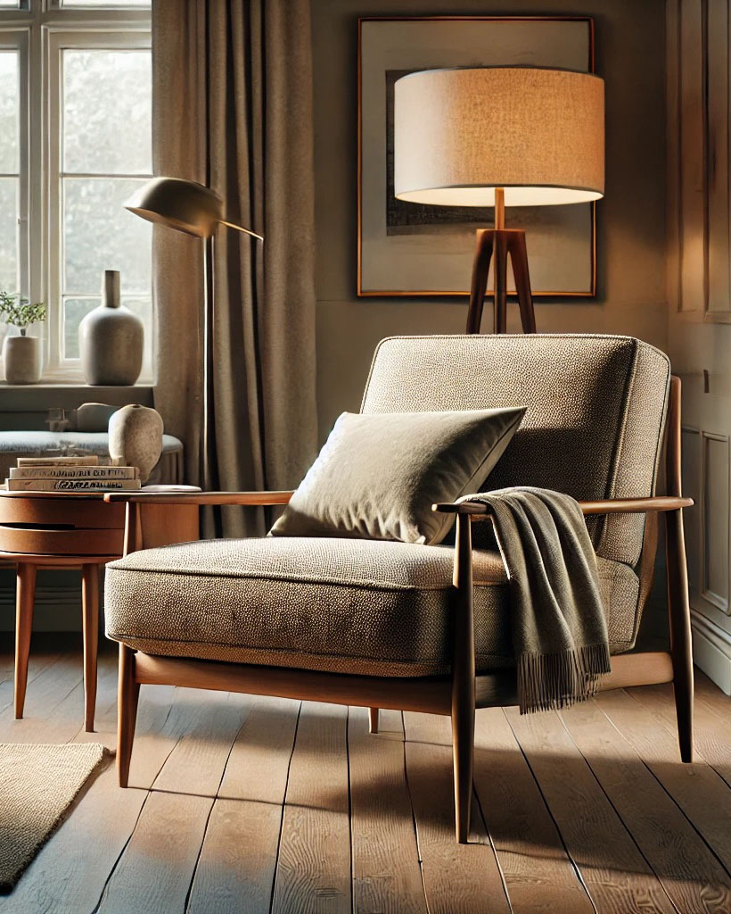
  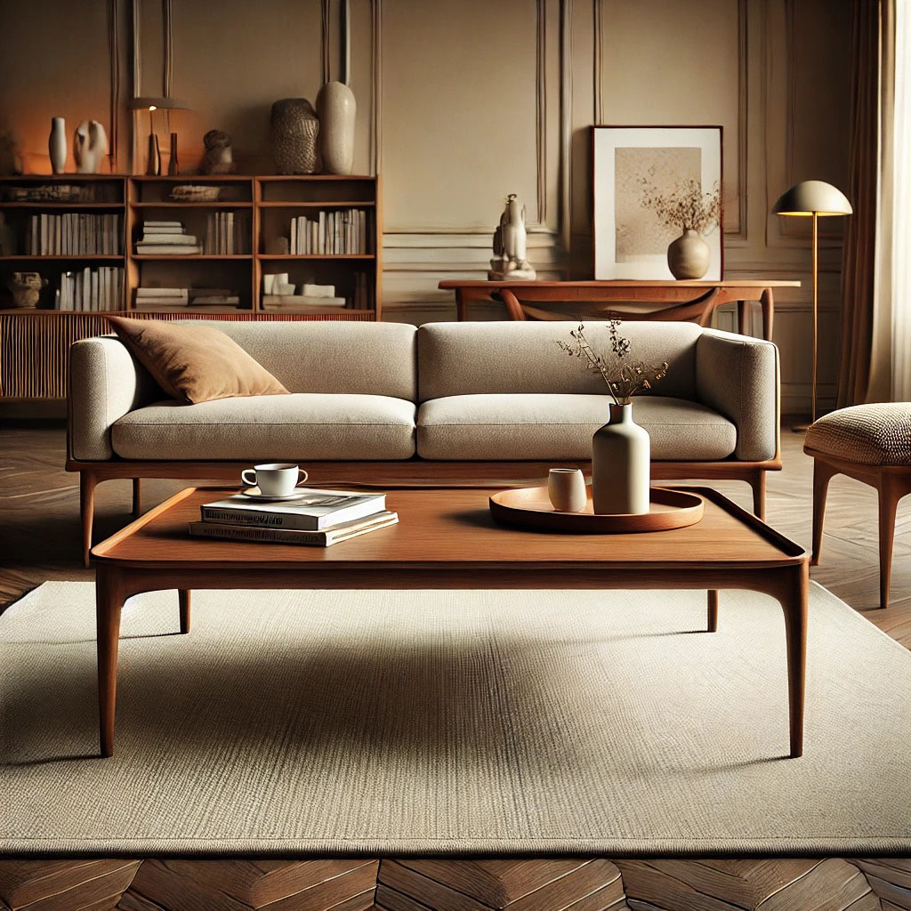
  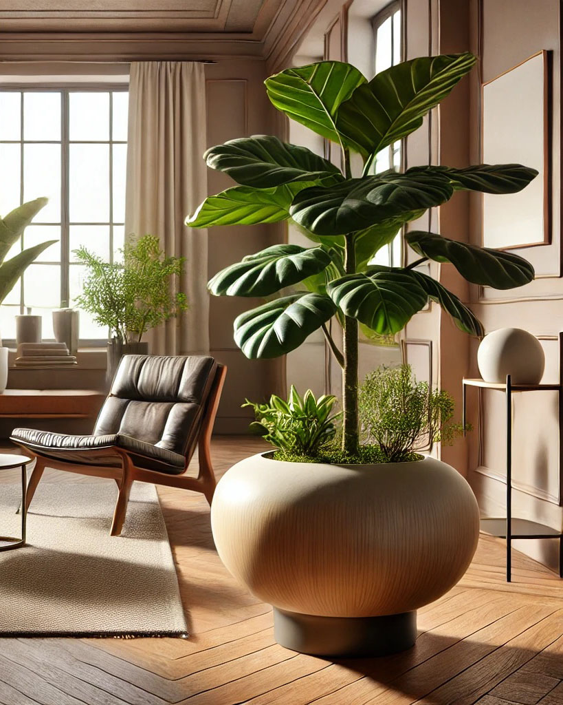
  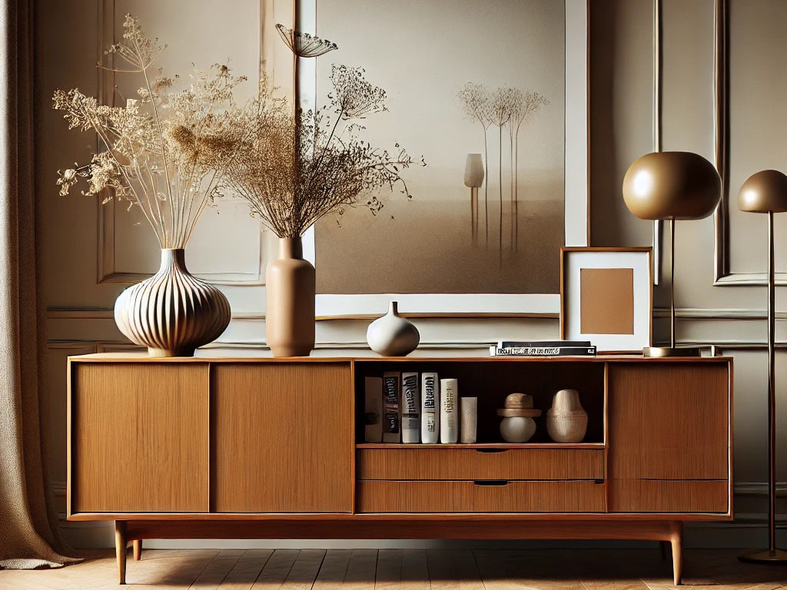
  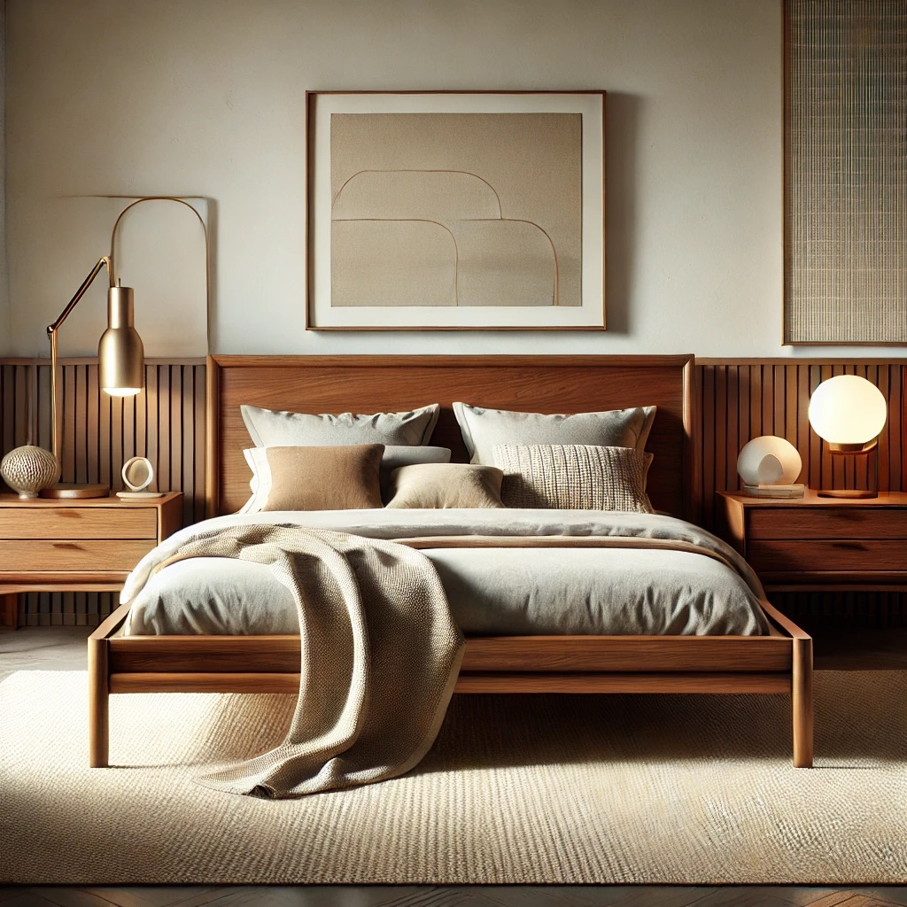
  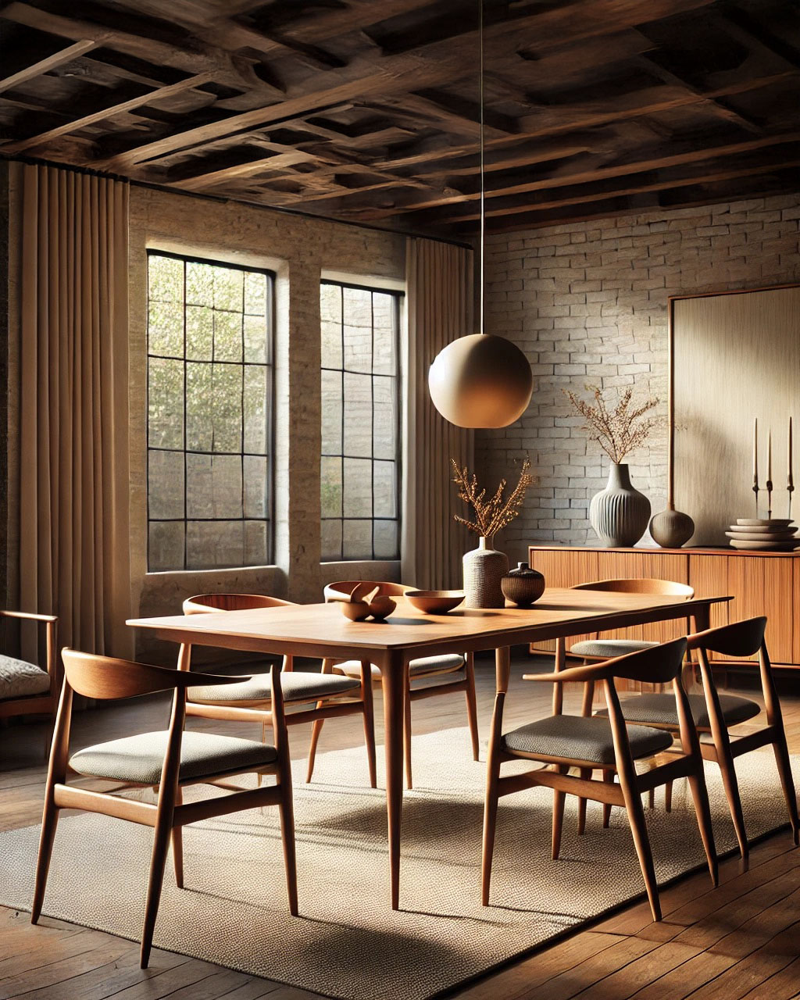
  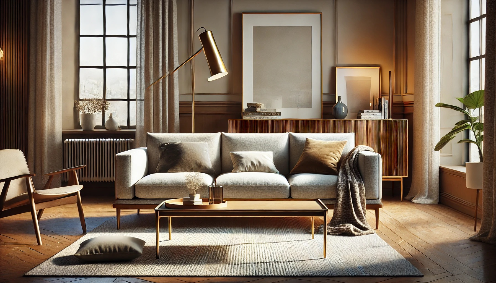
  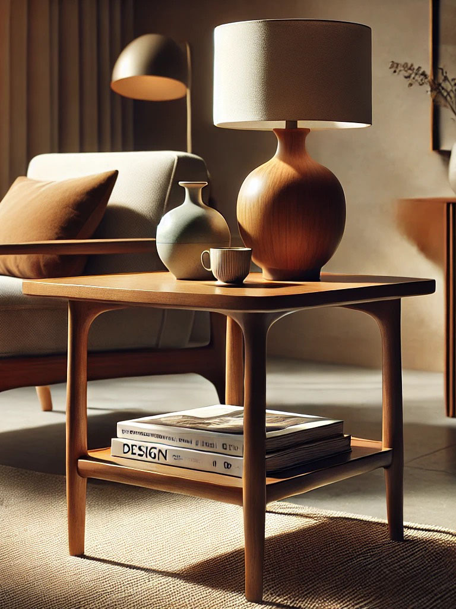
  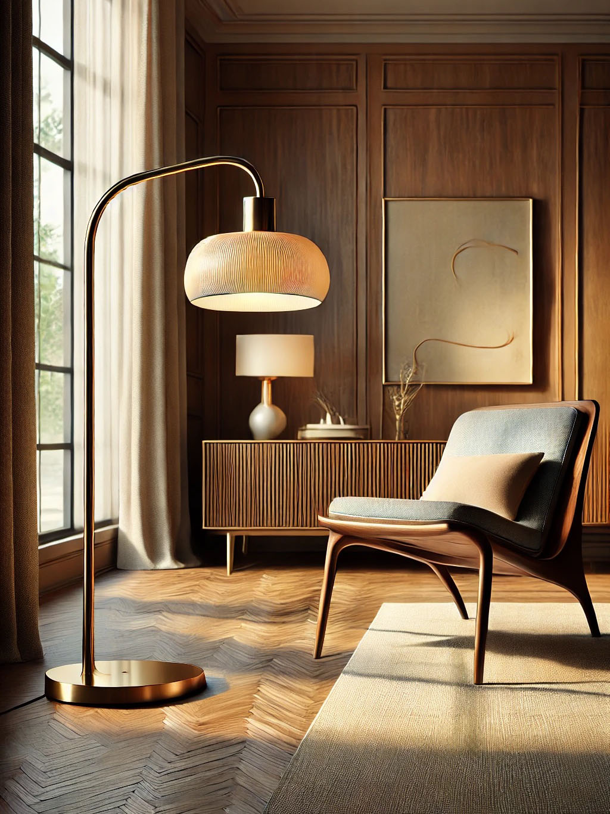
  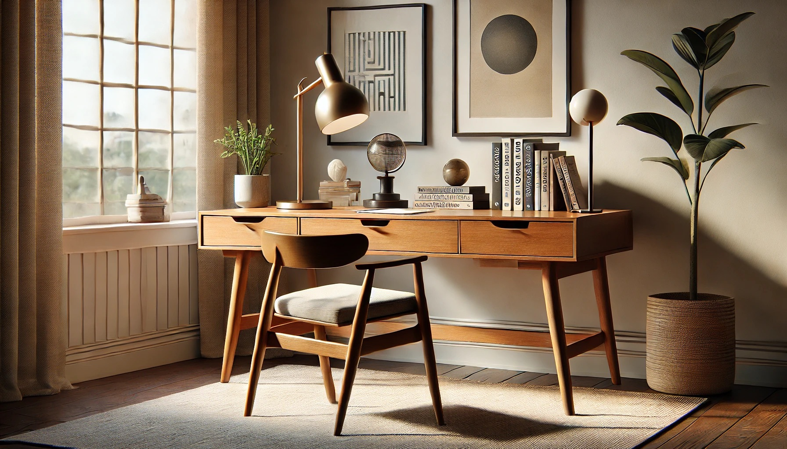
  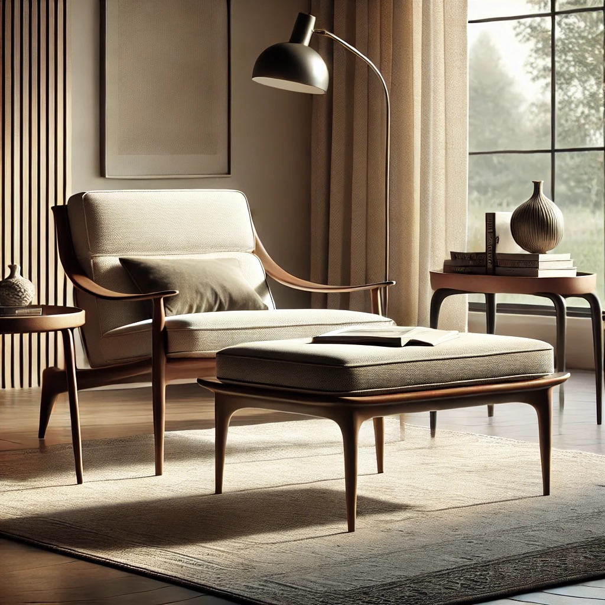
</div>
<style>
  .masonry-layout {
    display: grid;
    grid-template-columns: repeat(3, 1fr);
    grid-template-rows: masonry;
    gap: 10px;
  }
  .masonry-layout img {
    width: 100%;
    height: auto;
  }
</style>
